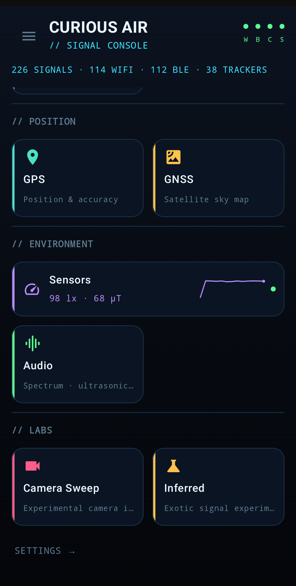
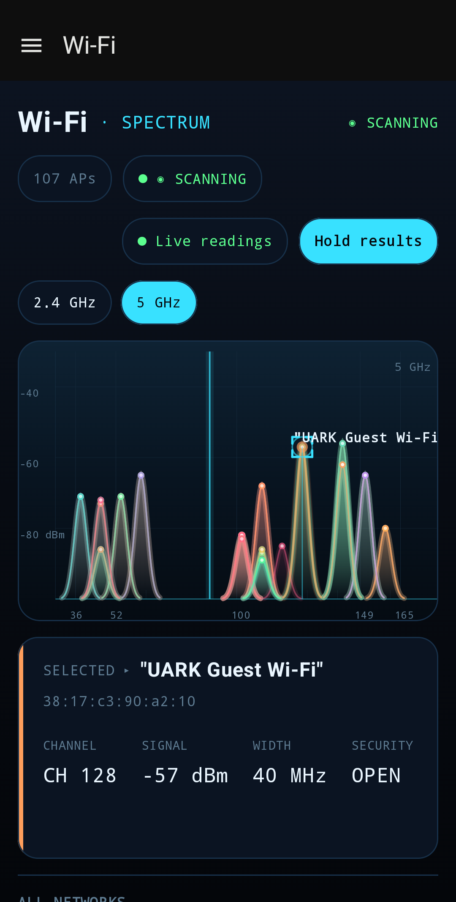
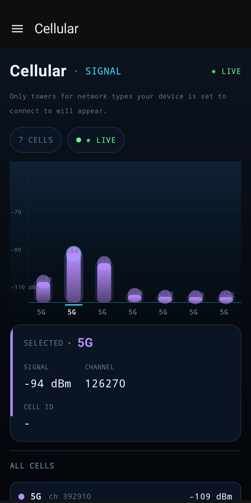
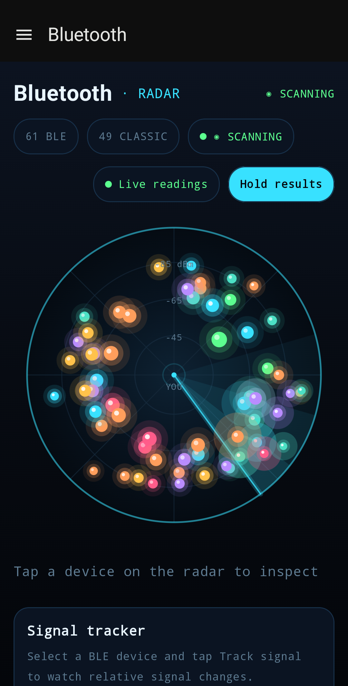
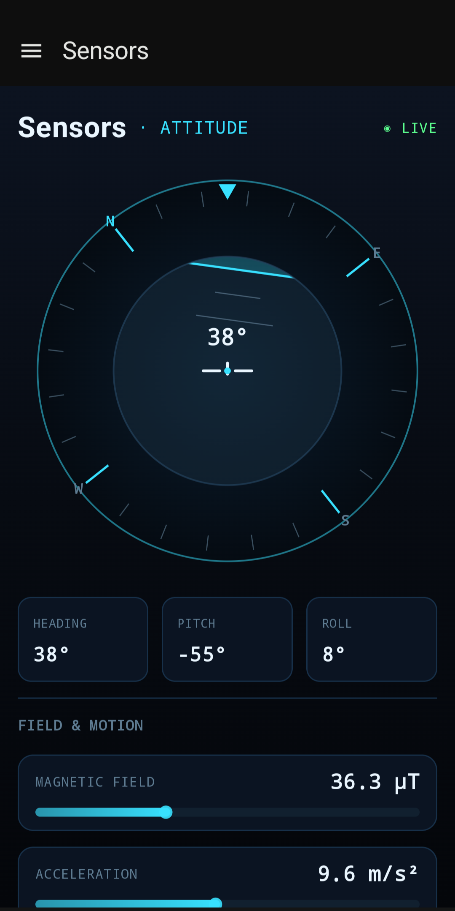
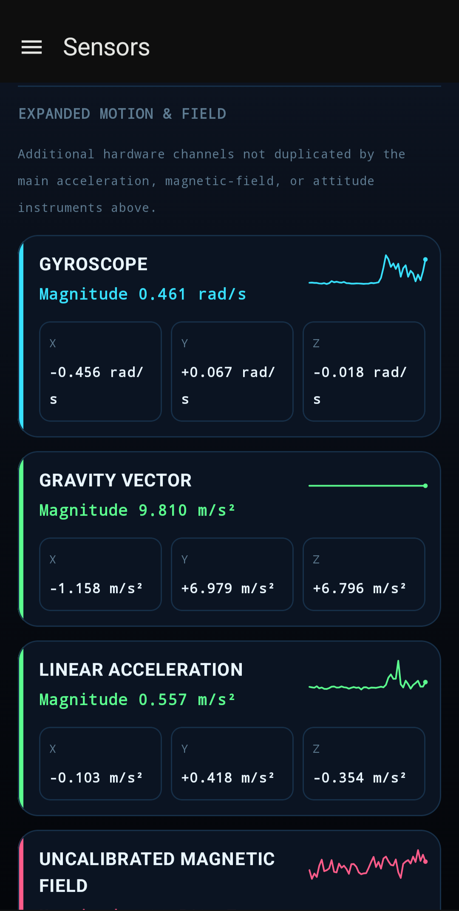
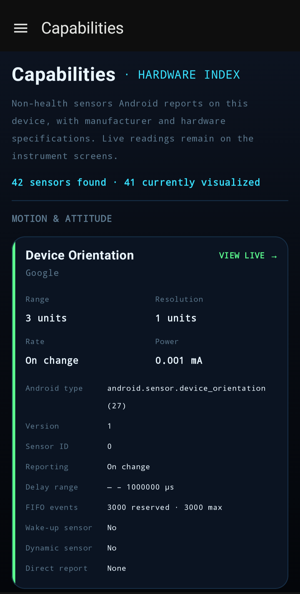

Wi-Fi
See nearby networks by channel and strength — live spectrum curves for 2.4 and 5 GHz, with security details and per-network signal history.
Explore the invisible signals around you.
Wi-Fi · Bluetooth · Cellular · GNSS · NFC · Sensors · Audio
Available free in open testing on Google Play.
Readings stay on your phone. Nothing you scan is uploaded to Ulix — data leaves your device only when you export a file yourself.
Curious Air requests access only when a feature needs it. Denying one permission does not disable the rest of the app.
No sign-up, no profile, no feed, no cloud dashboard. Open the app and start scanning.
Live views are free. Pro adds timed logging and CSV export.
Each view includes the relevant units and a plain explanation of what the measurements can — and can’t — tell you.
See nearby networks by channel and strength — live spectrum curves for 2.4 and 5 GHz, with security details and per-network signal history.
A radar of nearby devices ranked by relative signal strength. Decode advertisements, manufacturer data, and GATT services.
Inspect cellular signals detected by your phone — signal strength, network type, and cell details, updated live as you move.
Follow your GPS fix and explore the satellite sky — every satellite by constellation, elevation, azimuth, and signal strength.
Heading, pitch and roll, acceleration, magnetic field, light, proximity, pressure, altitude, and a live audio spectrum — analyzed in the moment, never recorded.
Tap NFC tags to read their contents, and discover the services announcing themselves on your local network over mDNS and SSDP.
Stable lists, clear units, live plots, and enough context to know what a number means.
Watch 2.4 and 5 GHz as live spectrum curves. Tap a peak for its channel, width, security, and signal history — or hold the results when you want the list to sit still.


The radar places Bluetooth devices by relative signal strength. Open one to decode its advertisements, manufacturer data, and GATT services — or switch consoles and inspect the cellular signals detected by your phone.


Heading, pitch and roll, acceleration, magnetic field, light, proximity, pressure, and a live audio spectrum — using the sensors available on your phone, each with its own clear readout.


Phones ship with different radios and sensors. Curious Air detects the hardware available on your device and marks unsupported features as unavailable.

Requires Curious Air Pro — a one-time unlock, not a subscription
Record Wi-Fi, Bluetooth, GNSS, and cellular readings together over time. Useful for debugging, research, and field analysis.
Pro is an optional one-time purchase inside the app, handled by Google Play.
Estimates, relative measurements, and unsupported hardware are labelled where they appear.
Scan data is not sent to Ulix. Network activity is limited to local discovery probes on the network you’re already connected to and Google Play billing for the optional Pro upgrade.
Every reading includes its units and limitations. Distance estimates are labelled as estimates, audio levels are relative, and unsupported sensors are marked unavailable.
Explore nearby signals and sensors without an account or ads. Available now in open testing on Google Play.
GET IT ONGoogle Play